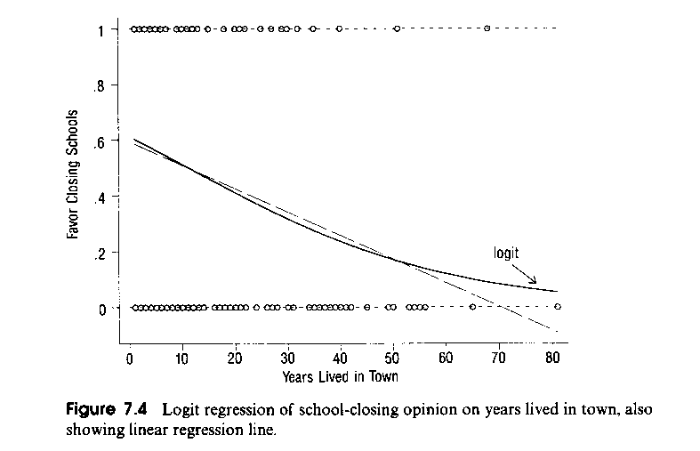
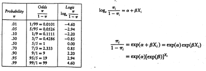
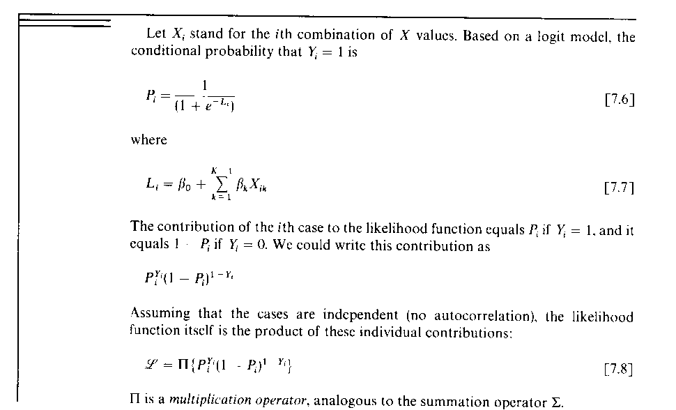
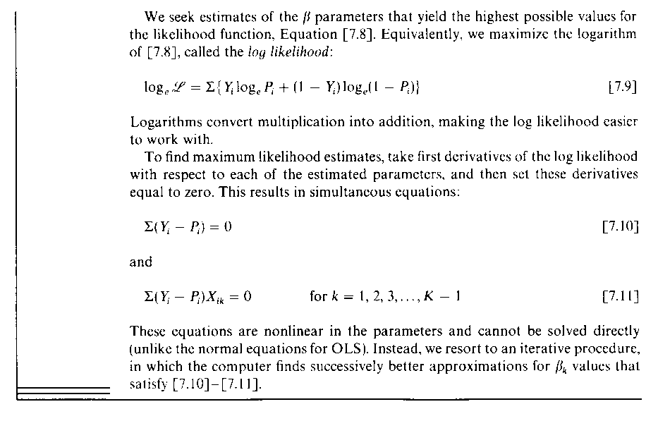
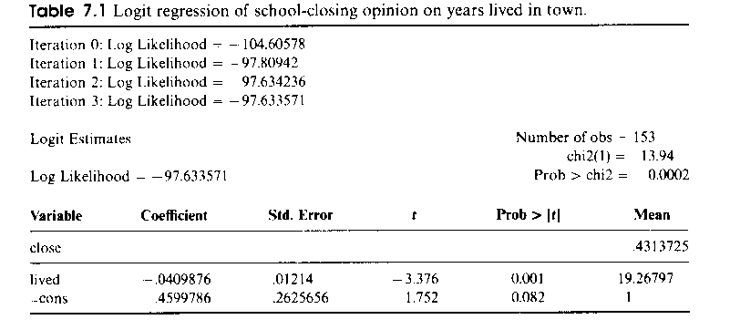
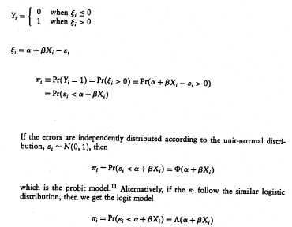
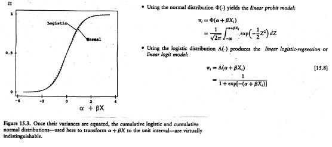
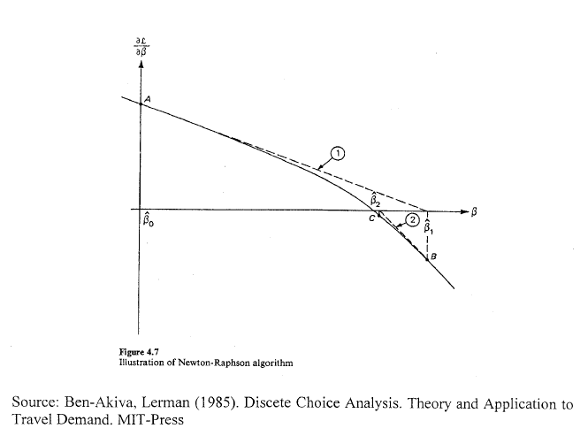
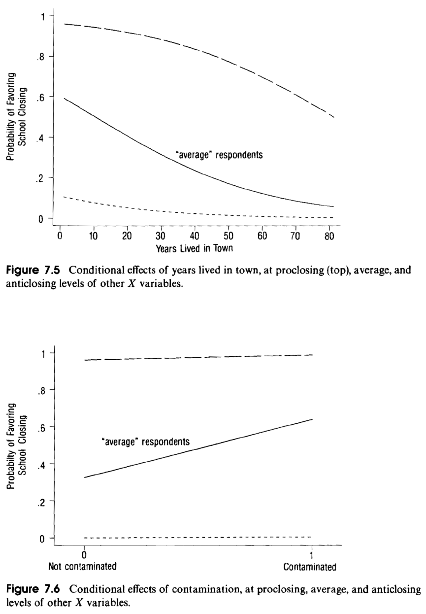

Week11: Hamilton Chapter 7 - Logistic Regression Analysis
1 Classification of Different Models for Categorical Variables
The dependent variable is categorical (contrast to OLS, which assumes a continuous distribution).
The independent variables can be any mix of metric variables and categorical variables (factors) as well as their interaction terms.
Classification based on
[a] the number of categories of the response variable and
[b] whether each observation \(i\) constitutes a single records (binary response) with \(n_i = 1\) or several observations are grouped together into aggregates (rates based on group counts \(n_g\)).
Here each group member must share the same exogenous group attributes:
| Two Categories (dichotomous) | Multiple Categories (polytomous) | |
|---|---|---|
| Individual Observations | Binary distribution | Binary multinomial distribution |
| Grouped Observations | Binomial distribution | Multinomial distribution |
There are specialized specifications of ordinal scaled dependent variables available. See the proportional odds model in Fox & Weisberg
Basic logistic regression focuses on the simple case with individual observations, and each observation can fall into just one of two mutually exclusive categories.
The category status is coded binary:
\[Y_i = \begin{cases} 1 & \text{observation } i \text{ in first category} \\ 0 & \text{observation } i \text{ in second category} \end{cases}\]
2 Problems of Modeling Dichotomous Data by Linear Regression
- Logistic regression aims at predicting the probabilities of belonging to each category
2.1 Problem 1: Linear Predictions outside the feasible range
- The predicted value cannot be interpreted as probability
\[\hat{\pi}_i = \Pr(Y_i = 1 | x_i) = b_0 + b_1 \cdot x_i \quad \text{for a given exogenous } x_i\]

The predicted linear probability value can fall outside the feasible range of probabilities \([0, 1]\).
For example: see HAM Fig 7.4 when years lived in town is greater than 70.
2.2 Solution to Problem 1: Infeasible Range of Predictions
Calculate odds \(\mathcal{O}_i = \frac{\pi_i}{1-\pi_i}\) with value range \(\mathcal{O}_i \in [0, \infty]\).
Transform odds into logits \(\mathcal{L}_i = \ln(\mathcal{O}_i) = \ln\left(\frac{\pi_i}{1-\pi_i}\right)\) with the value range \(\mathcal{L}_i \in [-\infty, +\infty]\).
\(\Rightarrow\) the logits can be modeled by a linear function!

Note: This specification only works for probabilities excluding certain events. Those probabilities are either 0 or 1.
This means, it is impossible to transform revealed outcomes \(Y_i = 1\) or \(Y_i = 0\) directly into odds or logits.
The linear function in the logits becomes (here for the i-th observation):
\[\ln\left(\frac{\pi_i}{1-\pi_i}\right) = \mathcal{L}_i = \beta_0 + \beta_1 \cdot x_{i,1} + \cdots + \beta_{K-1} \cdot x_{i,K-1}\]
- The estimated probabilities are given by the inverse of the logit function:
\[\ln\left(\frac{\pi_i}{1-\pi_i}\right) = \mathcal{L}_i\]
\[\Rightarrow \pi = \frac{1}{1 + \exp(-\mathcal{L}_i)}\]
\[\Leftrightarrow \pi = \frac{\exp(\mathcal{L}_i)}{1 + \exp(\mathcal{L}_i)} \quad \text{(equivalent expression)}\]
The inverse logit function gives the logistic curve displayed in HAM Fig 7.3.
For bivariate logistic regression this curve is monotonically increasing for a positive “slope” parameter \(\beta_1\) and monotonically decreasing for a negative “slope” parameter \(\beta_1\) (HAM Fig 7.4)
See also the R-script
FunctionalProbForms.r.
2.3 Problem 2: Heteroscedasticity of disturbances
- Residuals for each observation \(Y_i\) can take only two distinct values:
\[e_i = \begin{cases} 1 - \hat{\pi}_i & \text{if } Y_i = 1 \\ 0 - \hat{\pi}_i & \text{if } Y_i = 0 \end{cases}\]
- Following the binary distribution, the variance of the population disturbances is given by:
\[Var(\varepsilon_i) = (1-\pi_i) \cdot \pi_i\]
- The spread of the disturbances depends on the varying true probabilities of the individual observations \(i\) and, therefore, their variances become heteroscedastic.
2.4 Solution to the heteroscedasticity problem
Maximum likelihood estimation automatically accounts for the heteroscedasticity.
Alternatively, one could us iteratively re-weighted least squares (see Hamilton note 10 on page 238 and page 247).
However, the weights must be given in terms of logits \(\mathcal{L}_i\) for which the variance is at the \(k^{th}\) iteration (here \(n_i = 1\)):
\[Var\left(\ln\frac{Y_i}{1-Y_i}\right) = \frac{1}{n_i \cdot \hat{\pi}_i \cdot (1-\hat{\pi}_i)}\]
- Note: In contrast, the variance of the proportion estimate \(Y_i = \frac{\#\ of\ successes}{n_i}\) is
\[Var(Y_i) = \frac{\hat{\pi}_i \cdot (1-\hat{\pi}_i)}{n_i}\]
3 Estimation of logistic regression
Recall: The maximum likelihood method asks the question “Given the sample data, what set of hypothetical population parameter values \(\pi\) have most likely generated the observed data?”
Discuss highlighted text block in HAM p 223-224:

- The individual case probabilities are either
\[\hat{\pi}_i^{y_i} \cdot \underbrace{\left(1-\hat{\pi}_i\right)^{1-y_i}}_{=1} = \hat{\pi}_i \quad \text{for } y_i = 1 \quad \text{and}\]
\[\underbrace{\hat{\pi}_i^{y_i}}_{=1} \cdot \left(1-\hat{\pi}_i\right)^{1-y_i} = 1 - \hat{\pi}_i \quad \text{for } y_i = 0\]
The specification of \(\Pr(Y_i = 1)\) (eq. 7.6) is inserted into equation 7.8.
Under the independence assumption, individual probabilities can be linked multiplicatively.

Since these equations are non-linear, they can only be solved iteratively for the unknown parameters \(\{\beta_0, \beta_1, \ldots, \beta_{K-1}\}\) to obtain the maximum likelihood.
The predicted probabilities, which are estimated by maximum likelihood, satisfy the constraints (HAM eqs 7.10 and 7.11):
\[\sum_{i=1}^{n} Y_i = \sum_{i=1}^{n} \hat{\pi}_i\]
\[\sum_{i=1}^{n} x_{ik} \cdot Y_i = \sum_{i=1}^{n} x_{ik} \cdot \hat{\pi}_i\]
The first equation guarantees that the number of the observed “successes” matches the sum of the estimated probabilities for “success” in a sample
Therefore, the estimated probabilities provide unbiased predictions.
The second equation constrains the estimated probabilities weighted by \(x_{ik}\). If \(x_{ik}\) is an indicator variable, then the sum of estimated probabilities in the associated group are equal to the observed sum of “successes” in that group.
Discussion of HAM Table 7.1:

- An initial guess for \(\beta_1^{0-step} = 0\) (i.e., the observed \(x_i\)’s have no effect on \(\Pr(Y_i = 1)\)) and for \(\beta_0\) it is based on
\[\frac{\sum_{i=1}^{n} Y_i}{n} = \frac{\sum_{i=1}^{n} \frac{1}{1+e^{-\beta_0}}}{n} = \frac{1}{1+e^{-\beta_0}}\]
which can be solved for $\beta_0$.- The bivariate logistic regression in HAM Table 7.1 uses \(\hat{\beta}_0^{0-step}\) and \(\hat{\beta}_1^{0-step} = 0\) as starting value for the iteration 0. This gives a log-likelihood of –104.6.

At the third iteration the parameter estimates are \(\hat{\beta}_0^{3-step} = 0.46\) and \(\hat{\beta}_1^{3-step} = -0.041\) at an improved log-likelihood value of –97.6
- A test equivalent to the global F-test \(H_0: \beta_1 = \cdots = \beta_{K-1} = 0\) is given by the likelihood ratio test:
\[\chi_{df=K-1}^{2} = -2 \cdot \left[-104.60 - (-97.63)\right] = 13.94\]
with $df = K - 1$ for $K = \{\beta_0, \beta_1\}$.4 Excursion 1: Alternative derivations of logistic regressions (not test relevant)
Assume an underlying cumulative distribution function.
Link the observation \(Y_i\) by an unobserved variable formulation \(\boldsymbol{\xi_i}\) to the independent variable.
A prominent example of this perspective is the economic discrete choice theory (Nobel Prize in Economics to Daniel McFadden in 2002). See https://en.wikipedia.org/wiki/Discrete_choice.
Two cumulative distribution functions are:
[a] the standard normal distribution leads to the probit-model
[b] the logistic distribution leads to the logit-model
The logit model is mathematically easier to implement because its cumulative distribution function is known analytically and therefore it avoids numerical integration as in the case of the probits.

5 Excursion B: Iterative estimation of non-linear systems (not test relevant)

Recall that the first derivative of the log-likelihood function (i.e., its slope) must be zero at the optimal value of its argument \(\beta\).
The Newton-Raphson algorithm iteratively approximates the curved first derivative of the log-likelihood by a linear function
The zeros of the linear function are easily calculated.
The linear approximation continues at this tentative zero value until the algorithm converges, i.e., the tentative zeros do not change any more.
6 Global and partial tests via the likelihood ratio test
Different models produce different likelihood values: Prominent models are:
\(\hat{\pi}_i = \frac{\sum_{i=1}^{n} Y_i}{n} \quad \forall\ i \quad \Longrightarrow L_0\)
This is a model with constant probabilities using only the intercept estimate \(b_0\).
\(\hat{\pi}_i = Y_i \quad \forall\ i \quad \Longrightarrow L_S\)
This is the saturated model. It fits the observed data perfectly because it has one estimated parameter ‒ i.e., the observed \(\boldsymbol{Y_i}\) ‒ per observation, which leads to a predicted probability \(\hat{\pi}_i\) that is equal to the revealed outcome \(Y_i\).
For a binary logistic model the likelihood of the saturated model becomes one:
\[L_S = \prod_{i=1}^{n} {\underbrace{\hat{Y}_i}_{=\hat{\pi}_i}}^{Y_i} \cdot {\underbrace{(1-\hat{Y}_i)}_{=1-\hat{\pi}_i}}^{1-Y_i} = 1\]
The likelihoods are ordered in a sequence \(L_0 \leq L_{K-H} \leq L_K \leq L_S\) ranging from the least fitting model with just the intercept to the fully fitting model having \(n\) estimated parameters.
The intermediate models comprise of \(K-H\) and \(K\) parameters where \(H\) is the number of constrained parameters (i.e., set to the assumed value under the null hypothesis).
As with the partial F-test the estimated parameters need to be in a nested sequence.
See Ham Tables 7.1-7.4 for the nested test strategy.
Testing is conducted in terms of the log-likelihoods \(l_K\) of the models in a nested-modeling strategy
- Let \(l_K = \ln(L_K)\) be the log likelihood of the full model with K parameters
- Let \(l_{K-H} = \ln(L_{K-H})\) be the log likelihood the restricted model with H less parameters
The likelihood ratio test statistic \(\chi_H^2 = -2 \cdot (l_{K-H} - l_K)\) can be used.
It follows approximately a \(\chi^2\)-distribution with H degrees of freedom. If both models do not differ then the \(\chi^2\)-value would be zero. Thus large \(\chi^2\)-value indicates significant differences, and we need to apply a one-sided test.
In order to perform the likelihood ratio test we need to estimate both the full and the restricted model.
Several software packages report the deviance rather than likelihoods or log-likelihoods.
- The deviance compares the estimated model against the saturated model:
\[D = -2 \cdot (l_K - l_S)\]
- Since \(l_S = \log(\underbrace{L_S}_{=1}) = 0\), the deviance is related to the log-likelihood of the model by
\[D_K = -2 \cdot \log(L_K)\]
The deviance has a similar interpretation than residual sum of squares in OLS. That is, smaller deviances are better.
A likelihood ratio test can be performed in terms of differences in deviances:
\[\chi_H^2 = D_{K-H} - D_K\]
- Individual Wald t-tests \(H_0: \beta_k = 0\) on the parameters can be conducted by the t-statistic:
\[t = \frac{b_k}{SE_{b_k}}\]
Remember: The likelihood ratio test as well as the Wald t-test are only asymptotically valid.
The Akaike’s information criterion evaluates the log-likelihood of a model against the number of estimated parameters in the model:
\[AIC = -2 \cdot l_K + 2 \cdot K = D_K + 2 \cdot K\]
Smaller AIC indicates a better fitting model.
7 Parameter Interpretation
As consequence of the non-linearity in the relationship between the dependent variable \(\Pr(Y_i = 1)\) and the independent variables, all interpretations of the single estimated logit regression parameters must be conducted conditionally to the given values of the other variables:
For instance, the average of the remaining independent variables can be used.
See the R-function
effects::allEffects().
7.1 [a] Approach in terms of the logit
Recall that the logit-transformation is a monotone function (the larger the logit the larger the underlying probability).
Thus, the estimated parameters in \(\hat{\mathcal{L}}_i = b_0 + b_1 \cdot x_{i,1} + \cdots + b_{K-1} \cdot x_{i,K-1}\) can be interpreted as:
for positive coefficients \(b_k\), the greater X the larger the expected probability. Analog for negative \(b_k\)s.
Individual confidence intervals can be calculated for the logit specification:
\[b_k - t_\alpha(SE_{b_k}) \leq \beta_k \leq b_k + t_\alpha(SE_{b_k})\]
with \(t_\alpha(SE_{b_k})\) being a function of the standard error of coefficient \(b_k\) and the significance level.

We can reject the null hypothesis \(H_0: \beta_k = 0\) if the interval does not cover the value zero.
Interpretation of the model in terms of the logits is only the starting point because it does provide only an indirect link to the more meaningful probabilities.
7.2 [b] Approach in terms of the odds
- The odds-specification can be written as
\[\frac{\hat{\pi}_i}{1-\hat{\pi}_i} = e^{b_0} \cdot e^{b_1 \cdot x_{i1}} \cdot \ldots \cdot e^{b_{K-1} \cdot x_{i(K-1)}}\]
\[= e^{b_0} \cdot \left(e^{b_1}\right)^{x_{i1}} \cdot \ldots \cdot \left(e^{b_{K-1}}\right)^{x_{i(K-1)}}\]


Assuming all variables remain at a preset level except for the \(k^{th}\) variable, then one unit change in \(x_{ik}\) changes the odds of observing \(Y_i = 1\) by the factor \(e^{b_k}\) (multiplicative link).
If the estimated parameter is zero, i.e., \(b_k = 0\), then the odds won’t change because \(\left(e^{0}\right)^{x_{ik}} = 1\) (one is the neutral factor in multiplication)
The confidence interval in terms of the exponential function becomes
\[\exp\left(b_k - t(SE_{b_k})\right) \leq \exp(\beta_k) \leq \exp\left(b_k + t(SE_{b_k})\right)\]
If it does not include 1 the null hypothesis then \(H_0: \exp(\beta_k) = 1\) can be rejected.
The percentage change in the odds for observing \(Y_i = 1\) is given by \(100 \cdot \left(e^{b_k} - 1\right)\).
For an indicator variable \(X\) this has a clear interpretation by the odds-ratios:
\[OR = \frac{\hat{\mathcal{O}}_{X=1}}{\hat{\mathcal{O}}_{X=0}} = e^{b_k}\]
because the effects of the remaining variables cancel out irrespectively of their observed levels:
\[OR = \frac{e^{b_0} \cdot e^{b_1 \cdot x_{i1}} \cdot \ldots \cdot e^{b_k \cdot 1} \cdot \ldots \cdot e^{b_{K-1} \cdot x_{i(K-1)}}}{e^{b_0} \cdot e^{b_1 \cdot x_{i1}} \cdot \ldots \cdot \underbrace{e^{b_k \cdot 0}}_{=1} \cdot \ldots \cdot e^{b_{K-1} \cdot x_{i(K-1)}}} = e^{b_k}\]
7.3 [c] Approach in terms of the probabilities
- The estimated probability for observation i can is expressed by:
\[\hat{\pi}_i = \frac{1}{1 + \exp(-\mathcal{L}_i)} = \frac{1}{1 + \exp(-\mathbf{x}_i^T \cdot \mathbf{b})}\]
The interpretation that one-unit change in \(X\) causes \(b\) unit changes in the probability (either additively or multiplicatively) is no longer valid.
It dependents on the relative value of the predicted probabilities \(\hat{\pi}_i\) (see HAM Fig 7.3):
The slope of the logistic curve for a given probability \(\hat{\pi}_i\) with respect to one unit change in an independent variable \(X\) is given by \(b_k \cdot \hat{\pi}_i \cdot (1 - \hat{\pi}_i)\)
| \(\hat{\pi}_i\) | \(slope = b_k \cdot \hat{\pi}_i \cdot (1-\hat{\pi}_i)\) |
|---|---|
| 0.01 | \(b_k \times 0.0099\) |
| 0.05 | \(b_k \times 0.04575\) |
| 0.10 | \(b_k \times 0.09\) |
| 0.50 | \(b_k \times 0.25\) |
| 0.90 | \(b_k \times 0.09\) |
| 0.95 | \(b_k \times 0.04575\) |
| 0.99 | \(b_k \times 0.0099\) |
It has it maximum at \(\hat{\pi}_i = 0.5\)
The logistic curve fairly linear in the short intervals of \(\pi \in [0 < \pi^{lower}, \pi^{upper} < 1]\).
Consequently, weighted linear regression can be used for observed rates, as long as they don’t vary too much.
For metric variables only conditional effect plots, where the remaining variables are set at a specific fixed level, can be given (see HAM Figs 7.5 and 7.6)


Note the identity of the logistic curve in Fig 7.4 (model with the only variable “lived”) and the logistic curve of the “average” respondent in Fig 7.5.
This allows investigating the effects of one variable on the probability for different scenarios (in the example HAM p 231: population segment of risk-takers against cautious people).
8 Statistical Problems
Examine multicollinearity: [a] correlation among variables, [b] correlation matrix among estimate coefficients (preferred approach), [c] VIFs.
High discrimination does not allow estimating parameters (see example HAM Tab 7.5) because the measured level of an independent variable pre-determines the outcome of the dependent variable. I.e., for all \(x_k = c\) the observed \(Y\) is either 0 or 1.
9 Excursion: The Saturated Model Perspective
Using the saturated model as baseline switches the testing perspective:
Instead of looking for a model with a good fit starting from a basic model with only the intercept (=> constant predicted probability for all observations), we test against a perfect model that overfits the data by having as many parameters as we have observations.
We are looking for a parsimonious model and thus reduce the number of parameters as much as possible but keeping the \(\chi^2\)-test statistics barely insignificant.
That is, the final model with fewer parameters does not differ significantly from a perfectly fitting model with many parameters.
10 Excursion: Residual Analysis (not test relevant)
Detailed information on how to perform residual analysis and diagnostics for generalized linear models can be found in section 8.6 “Diagnostics for Generalized Linear Models” in Fox & Weissberg’s R Companion to Regression Analysis
Discuss notation of grouped independent variables HAM Tab. 7.6:
- \(Y_j\) is the sum of “successes” in a grouped pattern \(j\) of the independent variables.
- \(n_j\) is the number of cases with a grouped pattern \(j\).
Two different kinds of residuals:
- Pearson residuals (analog to the \(\chi^2\)-test for independence in contingency tables):
\[r_j = \frac{Y_j - n_j \cdot \hat{\pi}_j}{\sqrt{n_j \cdot \hat{\pi}_j \cdot (1-\hat{\pi}_j)}}\]
- Deviance residuals are based on the log-likelihood of individual cases (common grouped patterns \(n_j\)):
\[d_j = \pm \left\{ 2 \cdot \left[ Y_j \cdot \log\left(\frac{Y_j}{n_j \cdot \hat{\pi}_j}\right) + (n_j - Y_j) \cdot \log\left(\frac{n_j - Y_j}{n_j \cdot (1-\hat{\pi}_j)}\right) \right] \right\}^{1/2}\]
where the sign depends on the sign of $Y_j - n_j \cdot \hat{\pi}_j$.
Deviance residuals measure in how far a predicted probability of an individual observation differs from that of its saturated equivalent, which is zero.- Both statistics follow a \(\chi^2\)-distribution. A low \(\chi^2\)-value indicates that the model is not much different from a model with a perfect fit for \(Y_j\).